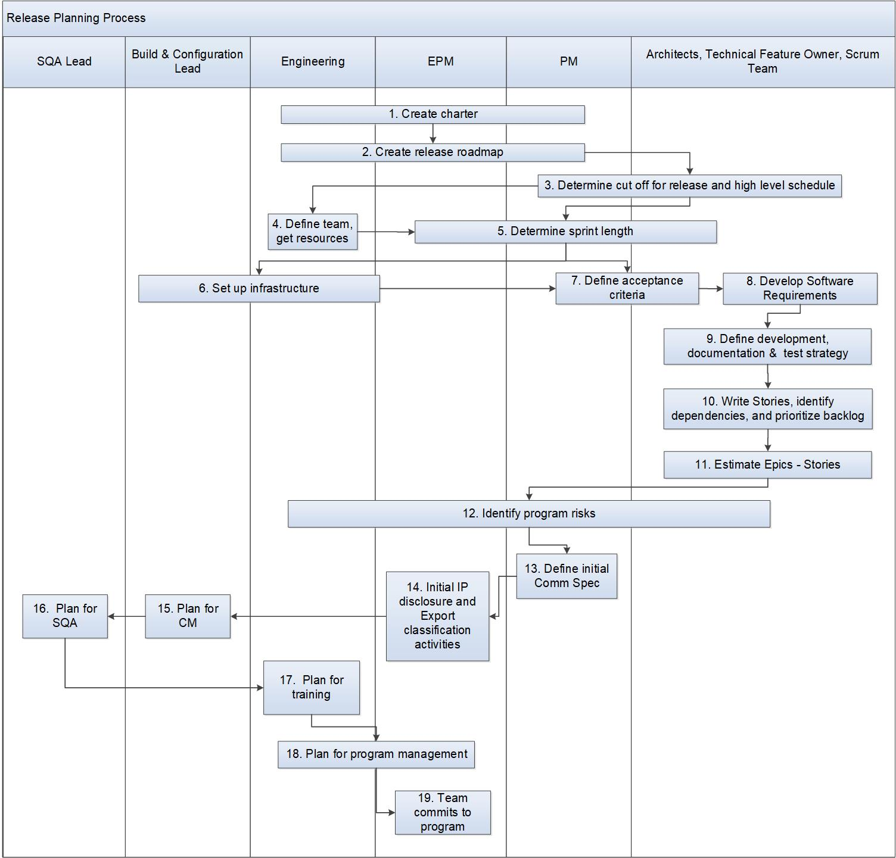

Release Planning Process¶
This process describes the release planning process. The Engineering Program Manager is responsible for this process.
Note: In cases where program level documents already exist (such as SDP, SQAP, SCMP, etc.), the project may choose to use these existing documents instead of creating them anew for the release.
Entry Criteria |
The Product team has market/product requirements for a product release. |
Inputs |
Market/Product requirements |
Exit Criteria |
Top priority features are committed for release it will be completed in. The requirements are ready for implementation. Team, and necessary hardware/ infrastructure are available, and key risks identified |
Outputs |
|
Stakeholders¶
Roles |
Responsibilities |
Engineering Program Manager(EPM) |
Responsible for:
|
Scrum team |
Scrum team includes Technical Lead, Engineering Manager (Dev & Test), Dev Engineer, Test Engineer, Information Development Engineer Responsible for identifying and estimating the Epics, Stories for the release. |
Product Manager(PM) |
Responsible for:
|
Activities¶

Step # |
Activity Name |
Description |
|---|---|---|
1 |
Create charter |
The EPM, PM, and Engineering Management create a charter for the release/program. The purpose of creating a charter is to have a discussion up front as to why the team is doing this release/program. The charter gets stakeholders and the team on the same page. Throughout the program, it keeps the team focused on the goals negotiated at the beginning. It is a way of communicating within the team, to senior management, and to other groups in the company. Note: The charter details are captured at the program release level in the Program Release Management system (a.k.a EPM tool, e.g., Panorama) |
2 |
Create release roadmap |
The PM works with the EPM and Engineering Management to create a release roadmap for the product in the Program/Release Management system (a.k.a EPM tool, e.g., Panorama). This is an ongoing task, reviewed on a regular basis. |
3 |
Determine cutoff for release and high level schedule |
The release cadence is agreed with the key stakeholders. Given the timeframe, the PM determines the Epics for the release. The EPM and the Key Stakeholders (e.g., EPM, PM, Engineering Managers - Dev & Test, Architects) determine the Milestones and Schedule. Sprint calendar (Sprint dates may be captured and stored in the Communciation system e.g., Jive) The EPM creates a high level schedule in the Program Release Management system (a.k.a EPM tool, e.g., Panorama) with the expected milestones. The schedule contains at a minimum:
|
4 |
Define team, get resources |
Engineering Management defines the team and obtains resources to do the program. In the best case, the team should have dedicated staff for essential technical and product functions (Developers, Testers, Writers, and Product Manager). |
5 |
Determine sprint length |
The sprint length is standardized by the Scrum Team documented in the Requirments Management system (e.g., Jira Agile). If a program/release has multiple teams and Scrum Masters, all teams should follow the EPM’s sprint schedule for coordination purposes. |
6 |
Set up infrastructure |
The EPM oversees the infrastructure for the program. Infrastructure includes the configuration management system, build system, agile program management, release notebook, program document repository, defect tracking, and automated test tools. |
7 |
Define acceptance criteria |
The PM, Scrum Masters and teams for the program release agree on the acceptance criteria for a feature/epic. The acceptance criteria for a feature/epic should, in the best case, include everything needed for a shippable product. |
8 |
Develop Software Requirement |
The Architect/Technical Feature Owner/Scrum Team develop and manage the software requirements according to the software requirements process. |
9 |
Define development, documentation and test strategy |
The Technical Lead describes the development strategy in the Software Development Plan. The Architect/PM/Scrum Team identify the dependencies/impacts between Epics. The Technical Publications team determines the documentation strategy and is documented in the Documentation Plan. The team determines the verification (test) & validation strategy. The strategy takes into account what types of testing the developer, tester, and writer will do, and what automation is expected. The test strategy is documented in the Software Test (Verification) Plan/Test Strategy and the validation strategy in the Validation Plan. |
10 |
Write Stories, identify dependencies and prioritize backlog |
This activity may take place much earlier, just after the charter and roadmap are available. Typically, the PM and product architect will write Epics that cover the product definition, and non functional requirements such as usability, quality, or performance. The PM and product architect prioritizes these stories and presents them to the team. The team begins to decompose the Epics into smaller Stories and fill in missing Stories. Stories may be written individually. Many stories will not be written until the backlog grooming session for the sprint takes place. Note: The Engineering team may decompose larger Epics into set of smaller Epics and schedule a rollout of capabilities over number of releases. Stories contain acceptance criteria which describe the desired functionality to be demonstrated in order to accept the user story. Stories need to be small enough to fit in one sprint. The EPM, PM, and Scrum team identify dependencies on other teams for Stories. The PM prioritizes the release backlog. |
11 |
Estimate Epics - Stories |
The team works together to estimate the Stories in the release backlog according to the guidance provided by the Requirements Management System. |
12 |
Identify program risks, issues and actions |
Risks, issues and actions are captured in the Program Release Management system (a.k.a EPM tool, e.g., Panorama) and managed according to the corresponding process guidelines. The EPM, PM, Scrum team identify risks and mitigations. The EPM and Scrum team work together to assure risks and mitigation plans are captured. |
13 |
Define initial comm spec |
The PM defines the initial commercial specifications including product codes (accessed via EPM tool) and delivers it to the Release team. |
14 |
Initial IP disclosure and export classification activities |
The EPM determines the strategy for keeping IP and export up to date for the program. One strategy is to disclose all expected IP and file export classification during planning, then compelte IP and export as part of the FC milestone criteria. |
15 |
Plan for configuration management |
The Technical Lead/CM Lead creates the Software Configuration Management plan (SCM plan) according to the Configuration Management Process. The plan may include:
|
16 |
Plan for Software quality management |
The SQA Lead creates the Software Quality Assurance Plan (SQA Plan) according to the Software Quality Assurance Process. The plan may include:
|
17 |
Plan for training |
The Engineering Manager creates the Training Plan (TP) according to the Training Process. The training plan activities may include:
|
18 |
Plan for program management |
The EPM documents the program management activities. The plan may include:
|
19 |
Team commits to program release |
Given the scope, schedule, and resources, the team commits to the program release. Plan of Record is reached when the release planning activities are complete and the team has committed. |
Change Log¶
Date |
Change Request ID |
Version |
Change By |
Description |
05/05/2020 |
N/A |
0.1 |
Shree Vidya Jayaraman |
Initial Draft |
06/02/2020 |
N/A |
0.2 |
Shree Vidya Jayaraman |
Updated based on Doina & Roger’s feedback |
06/08/2020 |
N/A |
0.3 |
Shree Vidya Jayaraman |
Updated based on Doina & Roger’s feedback |
06/15/2020 |
N/A |
0.4 |
Shree Vidya Jayaraman |
Updated based on Roger’s feedback |
06/18/2020 |
N/A |
0.5 |
Shree Vidya Jayaraman |
Updated based on Roger and Doina’s feedback |
06/22/2020 |
N/A |
0.6 |
Shree Vidya Jayaraman |
Updated based on Doina’s feedback |